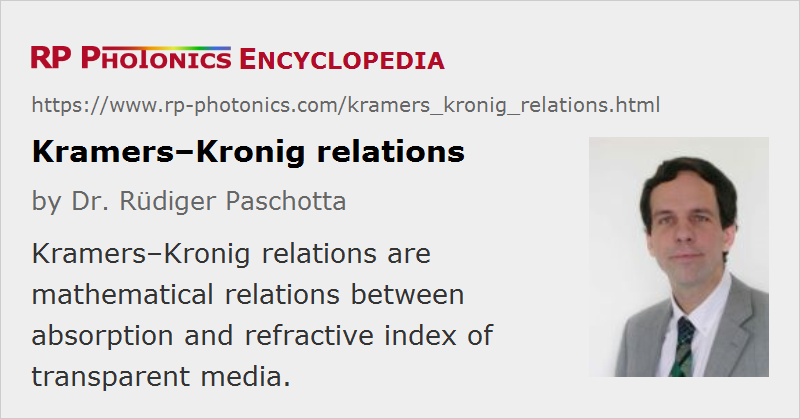

Kramers–Kronig Relations
Definition: mathematical relations between absorption coefficient and refractive index of transparent media
German: Kramers-Kronig-Relationen
Categories: general optics, physical foundations
How to cite the article; suggest additional literature
Author: Dr. Rüdiger Paschotta
(also sometimes used, but incorrect: “Kramers–Krönig relations”)
Within the theory of analytic complex functions, general relations have been developed which relate the real part of such a function to an integral containing the imaginary part, and vice versa. Such relations have found widespread application in the area of linear and nonlinear optics. Applied to the frequency-dependent dielectric function ε(ω), they lead to the relation
which is named after Ralph Kronig and Hendrik Anthony Kramers. Re ε(ω) is related to the refractive index (see below), and Im ε(ω) is related to the absorption (or gain) coefficient. The symbol Ω is angular frequency variable running through the whole integration range. The P-like symbol in front of the integral denotes the Cauchy principal value, which requires some care e.g. when calculating such an integral numerically. (Note the pole of the integrand!)
There is a second equation for the imaginary part of ε(ω) (not shown here), calculating absorption at one wavelength from the refractive index at all wavelengths. That equation is much less relevant for practical applications. Both equations combined are called the Kramers–Kronig dispersion relations.
There is another form of Kramers–Kronig relations, relating the refractive index n to the intensity absorption coefficient α:
These two forms are not directly related; note that in the first, but not in the second form there is a factor Ω in the numerator of the integrand.
Applications of Kramers–Kronig Relations
The Kramers–Kronig relations allow one to calculate the refractive index profile and thus also the chromatic dispersion of a medium solely from its frequency-dependent losses, which can be measured over a large spectral range. Note that a similar relation, allowing the calculation of the absorption from the refractive index, is much less useful because it is much more difficult to measure the refractive index in a wide frequency range.
Modified Kramers–Kronig relations are also very useful in nonlinear optics [3]. The basic idea is that the change in the refractive index caused by some excitation of a medium (e.g. generation of carriers in a semiconductor) is related to the change in the absorption. As the change in the absorption is normally significant only in a limited range of optical frequencies, it is relatively easily measured. Such methods can also be applied to laser gain media, e.g. for calculating phase changes in fiber amplifiers associated with changes of the excitation level [4, 5]. Note that in the case of rare-earth-doped gain media, for example, it is not sufficient to consider only the changes in gain and loss around a certain laser transition, because changes in strong absorption lines in the ultraviolet spectral region are also important.
Questions and Comments from Users
Here you can submit questions and comments. As far as they get accepted by the author, they will appear above this paragraph together with the author’s answer. The author will decide on acceptance based on certain criteria. Essentially, the issue must be of sufficiently broad interest.
Please do not enter personal data here; we would otherwise delete it soon. (See also our privacy declaration.) If you wish to receive personal feedback or consultancy from the author, please contact him e.g. via e-mail.
By submitting the information, you give your consent to the potential publication of your inputs on our website according to our rules. (If you later retract your consent, we will delete those inputs.) As your inputs are first reviewed by the author, they may be published with some delay.
Bibliography
| [1] | R. de L. Kronig, “On the theory of the dispersion of X-rays”, J. Opt. Soc. Am. 12 (6), 547 (1926), doi:10.1364/JOSA.12.000547 |
| [2] | M. Beck et al., “Group delay measurements of optical components near 800 nm”, IEEE J. Quantum Electron. 27 (8), 2074 (1991), doi:10.1109/3.83423 |
| [3] | D. C. Hutchings et al., “Kramers–Kronig relations in nonlinear optics”, Opt. Quantum Electron. 24, 1 (1992) |
| [4] | M. Montagna et al., “Nonlinear refractive index in erbium-doped optical amplifiers”, Opt. Quantum Electron. 27, 871 (1995) |
| [5] | J. W. Arkwright et al., “Experimental and theoretical analysis of the resonant nonlinearity in ytterbium-doped fiber”, J. Lightwave Technol. 16 (5), 798 (1998) |
| [6] | M. Sheik-Bahae, “Nonlinear optics basics: Kramers–Kronig relations in nonlinear optics”, in Encyclopedia of Modern Optics (eds. B. Guenter and D. Steel), Academic Press, London (2004) |
| [7] | J. D. Jackson, Classical Electrodynamics, 2nd edn., John Wiley & Sons, Inc., New York (1975) |
See also: dispersion, refractive index, causality
and other articles in the categories general optics, physical foundations
|  |
If you like this page, please share the link with your friends and colleagues, e.g. via social media: 


These sharing buttons are implemented in a privacy-friendly way! |
2020-07-05
What happens when $omega; = $Omega;?
Answer from the author:
The integrand has a pole at that location, i.e., it diverges for $omega; → $Omega;. This problem is handled by taking the so-called Cauchy principal value. Basically, that means removing a tiny interval around the pole from the integration and taking the limit for the width of that interval going towards zero.